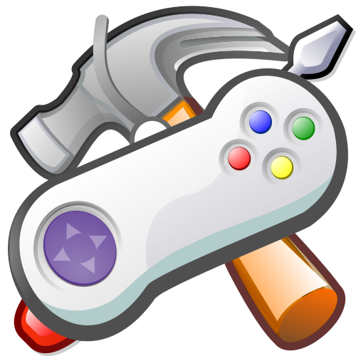

Razvoj Video Igara

Uzimajući u obzir da su mi većinu života glavni izvor zabave bile video igrice, nije čudno da osjetim preddispoziciju za njihov razvoj. Čak i prije stećenih znanja iz programiranja, često bih se zapitao kako točno se postiglo nešto u video igrici dok bih ju igrao; sustavi borbe, izrada virtualnog fizičkog okruženja, kôd iza menüa, itd. Ulazak u ovaj spektar zanimanja bi mi omogućio da objedinim svoj najveći hobby i svoja informatička znanja.
Za razvoj video igre potrebno je ili da jedna osoba može obavljati više od jedne uloge unutar razvojnog tima, ili da se osnuje tim sa osobom, pa čak i grupom ljudi, za svaku pojedinu ulogu potrebnu za razvoj igre. Te uloge uključuju dizajnera video igre, game artist, programer, level dizajner, audio inžinjer, tester.
Tester u svom prirodnom habitatu.
Svoje zanimanje bih fokusirao na ulogu programera, zbog očitih preddispozicija za to te zato što me to najviše i zanima.
Kao programer video igrica, moje obaveze uključuju implementiranje fizike (ukoliko je potrebno) unutar igrice, izrada
AI-a (Artifical Intelligence) sustava, integracija zvuka uz prikladne elemente, skriptiranje
ponašanja AI-a i level editora, izrada UI-a (User Interface), itd. Srećom, većinu ovih individualnih obaveza
obavaljaju radna okruženja, odnosno game enginei.
Na kraju, glavni razlog zašto bih se htio baviti ovime jest 'spajanje ugodnog s korisnim', odnosno spajanje mog petnaestogodišnjeg
hobija i mojih programerskih kompetencija u neki oblik ekspresije. Profitabilne ekspresije, po mogućnosti.
Stranica izrađena kao dio konstrukcijskih vježba kolegija Multimedijska Tehnika na Elektrotehničkom fakultetu u Osijeku.